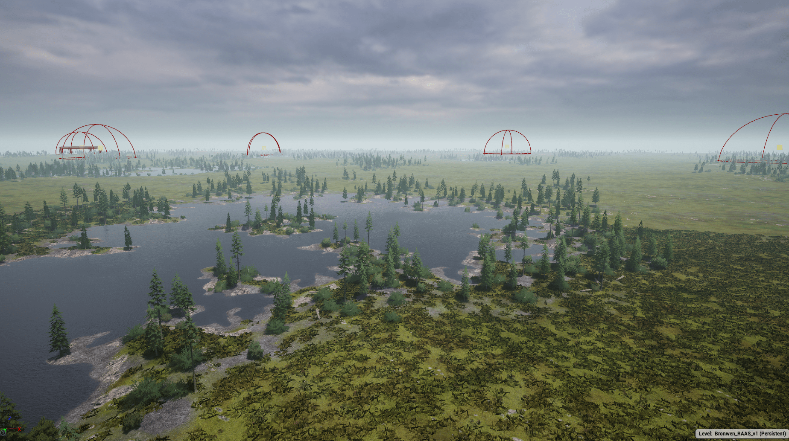

Overview
Bronwen is a 64km^ Unreal Engine 4 level designed for 50 vs. 50 multiplayer sessions. Set in the barren tundra of North America, the level’s unique location presents unique gameplay challenges intended to reward the teamwork-oriented reward system of the vanilla game heavily. This project had a development time of 9 months and included content created on World Machine, Substance Designer, Substance Sampler, Blender, and TreeIt.

Level Design
The design for the grey box block out of Bronwen originally came from my frustrations with what I perceived as Squad’s lack of faithfulness to its predecessor, Project Reality. Specifically, how forgiving its weapon handling and suppression system in 2021 was to players caught out in the open in ambush situations.
For me, the magic of Project Reality’s design was that tactics were the primary skill that determined outcomes of engagements over individuals’ ability to aim and shoot. In Project Reality, if someone was out in the open and you had the drop on them, 9 out of 10 times the outcome would be in your favor; in Squad, this wasn’t necessarily the case due to the more modern 1st-person character controller and movement system which enabled players to return with effective fire with no downside.
Bronwen was designed primarily as a response to my displeasure with this dynamic and my nostalgia for the older design focus of PR’s levels. Several sessions of playtesting were required to tweak the objective zones, available assets for each team, and lighting conditions. Overall, the project’s level design was successful in delivering a challenging and unique experience for seasoned players of the game.
Environment Design
To complement my level design approach, a suitable location for the map needed to be selected to complement the wide-open spaces intrinsic to its layout. Therefore, I figured a tundra-esque environment would be suitable for the visual theme of the environment. Some of the wide-open flat spaces on Donner Summit served as some initial inspiration, but the asset library available to me led to research elsewhere. Eventually, I settled with a geographically agnostic setting due to the resources available to me.
I began with the terrain heightmap generation in World Machine 3, using its Layout Generator nodes to define the low points for where the lakes would sit as well as some subtle high points for points of interest. After this, I used the Erosion node to blend the layers and create a believable landscape to set the stage for the level.
The base game’s asset library served as a great place to start, offering a wealth of organic boreal forest assets as well as several roads and fortifications to populate the sparse terrain. Additionally, I utilized the animated water shader for the lakes, which served as the visual centerpiece and reference point in the terrain. I created custom brushes with the UE4 terrain system to populate the different regions of the map to create a diversity of flora dispersion based on location.
Lastly, to tie everything together, the points of interest required custom spline-deformable assets to be created for the entrenchments that dot the treeline as well as bunkers and dugouts for players to hide. This was done in Blender and textures were applied in Substance Painter.